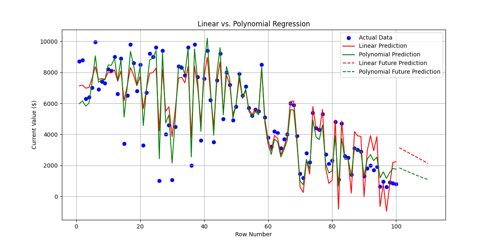

File: investments_day7.csv
Location: C:/resume-portfolio/practice01/
Structure: 100 rows with columns including Dollars Invested, Current Value, Growth %, and Row Number.
Enhanced my Day 7 linear regression model with polynomial regression using scikit-learn's PolynomialFeatures to capture non-linear trends in investment data. The script ml_advanced.py compares linear and polynomial models, evaluates performance with Mean Squared Error (MSE), and predicts values for the next 10 investments.
import pandas as pd
import numpy as np
from sklearn.linear_model import LinearRegression
from sklearn.preprocessing import PolynomialFeatures
from sklearn.metrics import mean_squared_error
import matplotlib.pyplot as plt
data = pd.read_csv('C:/investments_day7.csv')
data['Dollars Invested'] = data['Dollars Invested'].replace(r'[\$,]', '', regex=True).astype(float)
data['Current Value'] = data['Current Value'].replace(r'[\$,]', '', regex=True).astype(float)
X = data[['Dollars Invested', 'Row Number']]
y = data['Current Value']
linear_model = LinearRegression()
linear_model.fit(X, y)
linear_predictions = linear_model.predict(X)
poly_features = PolynomialFeatures(degree=2, include_bias=False)
X_poly = poly_features.fit_transform(X)
poly_model = LinearRegression()
poly_model.fit(X_poly, y)
poly_predictions = poly_model.predict(X_poly)
new_X = pd.DataFrame({'Dollars Invested': np.full(10, 1000), 'Row Number': range(101, 111)})
new_X_poly = poly_features.transform(new_X)
new_linear_predictions = linear_model.predict(new_X)
new_poly_predictions = poly_model.predict(new_X_poly)
linear_mse = mean_squared_error(y, linear_predictions)
poly_mse = mean_squared_error(y, poly_predictions)
print(f"Linear Regression MSE: {linear_mse:.2f}")
print(f"Polynomial Regression MSE: {poly_mse:.2f}")
print("\nPredicted Current Values for next 10 investments:")
print("Linear Regression:")
for i, pred in enumerate(new_linear_predictions, 101):
print(f"Investment {i}: ${pred:.2f}")
print("Polynomial Regression:")
for i, pred in enumerate(new_poly_predictions, 101):
print(f"Investment {i}: ${pred:.2f}")
plt.figure(figsize=(12, 6))
plt.scatter(data['Row Number'], y, color='blue', label='Actual Data')
plt.plot(data['Row Number'], linear_predictions, color='red', label='Linear Prediction')
plt.plot(data['Row Number'], poly_predictions, color='green', label='Polynomial Prediction')
plt.plot(new_X['Row Number'], new_linear_predictions, '--r', label='Linear Future Prediction')
plt.plot(new_X['Row Number'], new_poly_predictions, '--g', label='Polynomial Future Prediction')
plt.xlabel('Row Number')
plt.ylabel('Current Value ($)')
plt.title('Linear vs. Polynomial Regression')
plt.legend()
plt.grid(True)
plt.savefig('c:/linear_vs_poly.png')
plt.show()
predictions_df = pd.DataFrame({
'Row Number': range(101, 111),
'Linear Prediction': new_linear_predictions,
'Polynomial Prediction': new_poly_predictions
})
predictions_df.to_csv('C:/ml_advanced_predictions.csv', index=False)
print("Predictions saved to ml_advanced_predictions.csv")
Results:
Linear Regression MSE: 1057203.92
Polynomial Regression MSE: 438929.92
Predicted Current Values for next 10 investments:
Linear Regression:
Investment 101: $3142.13
Investment 102: $3029.36
Investment 103: $2916.58
Investment 104: $2803.81
Investment 105: $2691.04
Investment 106: $2578.26
Investment 107: $2465.49
Investment 108: $2352.72
Investment 109: $2239.94
Investment 110: $2127.17
Polynomial Regression:
Investment 101: $1838.65
Investment 102: $1745.59
Investment 103: $1654.77
Investment 104: $1566.21
Investment 105: $1479.90
Investment 106: $1395.83
Investment 107: $1314.02
Investment 108: $1234.46
Investment 109: $1157.14
Investment 110: $1082.08
 (Figure 1: Linear vs. Polynomial Regression)
Analysis: The polynomial model’s lower MSE (438,929.92 vs. 1,057,203.92) indicates a better fit, capturing non-linear growth trends like NVIDIA Stock (12,328.57%). However, both future predictions trend downward, suggesting a need to explore higher degrees or additional features. Saved predictions to ml_advanced_predictions.csv. In cell A165: “Implemented polynomial regression in Python to predict investment values, improving on linear regression with a lower MSE.”
Refined data visualization using Python and matplotlib to analyze the investment portfolio. The script analyze_portfolio.py loaded investments_day7.csv, calculated summary statistics, grouped data by Investment Type, and created a bar chart of total current values.
import pandas as pd
import matplotlib.pyplot as plt
data = pd.read_csv('C:/investments_day7.csv')
data['Current Value'] = data['Current Value'].replace(r'[\$,]', '', regex=True).astype(float)
print("Summary Statistics:")
print(data.describe())
type_summary = data.groupby('Investment Type')['Current Value'].sum()
print("\nTotal Current Value by Investment Type:")
print(type_summary)
plt.figure(figsize=(10, 6))
type_summary.plot(kind='bar', color='skyblue')
plt.title('Total Current Value by Investment Type')
plt.xlabel('Investment Type')
plt.ylabel('Total Current Value ($)')
plt.xticks(rotation=45)
plt.tight_layout()
plt.savefig('C:/Practice01/day8/bar_chart.png')
plt.show()
type_summary.to_csv('C:/investment_type_summary.csv')
Results:
Summary Statistics:
Current Value Row Number Predicted Value
count 100.000000 100.000000 0.0
mean 5197.000000 50.500000 NaN
std 2793.777538 29.011492 NaN
min 600.000000 1.000000 NaN
25% 2875.000000 25.750000 NaN
50% 5150.000000 50.500000 NaN
75% 7625.000000 75.250000 NaN
max 9950.000000 100.000000 NaN
Total Current Value by Investment Type:
Investment Type
Bond 45400.0
Crypto 25800.0
ETF 40300.0
Fund 9500.0
Other 53250.0
Stock 345450.0
Name: Current Value, dtype: float64
(Figure 2: Bar Chart)
Analysis: The bar chart confirms Stock dominance at $345,450, aligning with SQL results from Day 7. The wide standard deviation ($2,793.78) reflects portfolio volatility. Saved summary to investment_type_summary.csv. In cell A166: “Refined visualization with Python, confirming Stock dominance at $345,450.”
Evaluated the models using MSE and visualized the fit. The polynomial regression’s ability to capture curvature in the data suggests it’s more suitable for this portfolio’s volatility.
Key Findings: The polynomial model’s MSE (438,929.92) is significantly lower than the linear model’s (1,057,203.92), indicating improved accuracy. The visualization shows better alignment with actual data, though future predictions trend downward, possibly due to limited features.
Next Steps: Experiment with higher polynomial degrees (e.g., 3) or incorporate features like Growth % to enhance predictions. Consider exploring decision trees or other models.
In cell A167: “Evaluated polynomial regression with MSE, confirming better fit than linear model, planning to explore advanced models next.”